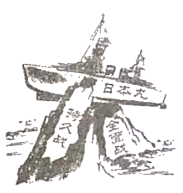

2020年北京市中考历史试题 · 选择题 第16、17、18、19、20题 · 对应解析
16．1935年1月中共中央召开会议，会后中央红军在毛泽东为代表的中共中央领导下，四渡赤水，巧渡金沙江，跳出了敌人的重重包围，这次会议是中国共产党从幼年走向成熟的标志，此会议是（ ）
A．中共一大B．古田会议C．遵义会议D．中共七大
【分析】本题主要考查遵义会议。题干关键信息“中国共产党从幼年走向成熟的标志”。
【解答】1935年1月，中共中央政治局在贵州遵义召开扩大会议。这次会议确立了以毛泽东为核心的党中央的正确领导，遵义会议挽救了党，挽救了红军，挽救了革命，是党的历史上生死攸关的转折点，标志着中国共产党从幼稚走向成熟。C符合题意。
故选：C。
【点评】本题注重考查学生识记和分析历史知识能力，注意掌握遵义会议的召开背景、内容以及意义。
17．如图漫画《搁浅》（依原图改绘）创作于1941年，该漫画表达的是（ ）

A．九一八事变成为中国人民抗日战争的起点
B．淞沪会战打破日本三个月灭亡中国的迷梦
C．世界爱好和平与正义的国家和人民支持中国抗战
D．中华民族空前团结，英勇抗争必将取得抗战胜利
【分析】本题主要考查中国抗日战争胜利的原因的相关史实。识读图片是解答本题的关键。
【解答】据题干漫画《搁浅》中“日本丸”“持久战”“全面战”及所学知识可知，中华民族空前团结，英勇抗争必将取得抗战胜利。据所学知识可知，在中国共产党倡导下，建立了以国共两党合作为基础的抗日民族统一战线；国民党军队在正面战场与日军展开了多次会战，消灭了大量日军，打击了日军的嚣张气焰；中国共产党提出了全面抗战路线，制定了持久战的战略方针和一整套正确的作战原则，中国共产党领导的八路军、新四军以及各地的人民抗日武装抗击和牵制着大部分侵华日军和几乎全部伪军，成为全民族抗战的中流砥柱，对抗战的胜利起了决定性作用。中华民族空前团结，英勇抗争必将取得抗战胜利。选项D符合题意。
故选：D。
【点评】本题主要考查学生对图片的解读能力和对历史知识的识记、理解能力。理解并识记中国抗日战争胜利的原因的相关史实。
18．如图纪念章反映的历史事件（ ）
A．加速了人民解放战争在全国的胜利
B．推翻了官僚资本主义在中国的统治
C．大大提高了我国的国际地位
D．摧毁了我国的封建土地制度
【分析】本题主要考查抗美援朝运动的历史意义。抗美援朝为经济建设赢得了相对稳定的和平环境。
【解答】1953年7月，美国侵略军被迫在停战协定上签字。中朝人民取得了反侵略战争的伟大胜利。抗美援朝战争的胜利，维护了亚洲和世界和平，大大提高了新中国的国际威望，极大地增强了中华民族的自信心和凝聚力，为新中国经济建设赢得了一个相对稳定的和平环境。
故选：C。
【点评】本题主要考查学生识记历史基础知识的能力，注意掌握抗美援朝运动的历史意义。
19．深圳一直是我国对外开放的重要“窗口”，现在正向中国特色社会主义先行示范区迈进，深圳成为“窗口”的起点是指（ ）
A．实行民族区域自治
B．实行家庭联产承包责任制
C．成为首批经济特区
D．开启了城市经济体制改革
【分析】本题考查经济特区的设立，知道深圳成为“窗口”的起点是指成为首批经济特区。
【解答】1980年，我国在广东深圳、珠海、汕头和福建的厦门建立四个经济特区，后来又增设海南经济特区。这些经济特区，国家给予优惠的经济政策，吸收侨资外资，引进先进科学技术和管理经验。深圳在短短几年内，建成一座繁华的现代化城市，成为经济特区的代表，对外开放的窗口。故深圳成为“窗口”的起点是指成为首批经济特区。
故选：C。
【点评】本题考查经济特区的设立，考查学生的识记和理解能力，解题关键是熟练掌握基础知识。
20．如表是某班制作的“云展板”的主要内容，其主题是（ ）
1970年4月，我国第一颗人造地球卫星﹣﹣东方红一号发射成功。 2003年10月，神舟五号载人飞船升入太空并成功返回地面。 2020年6月，我国北斗三号最后一颗组网卫星发射成功。 |
A．核能利用B．走向太空C．大国外交D．军队改革
【分析】本题主要考查我国走向太空的相关史实。掌握我国的科技发展。
【解答】据某班制作的“云展板”的主要内容“1970年4月，我国第一颗人造地球卫星﹣﹣东方红一号发射成功。”“2003年10月，神舟五号载人飞船升入太空并成功返回地面。”“2020年6月，我国北斗三号最后一颗组网卫星发射成功。”可知，我国的航天技术飞速发展，逐步走向太空，故其主题可以确定为走向太空。选项B符合题意。
故选：B。
【点评】本题主要考查学生对图片信息的有效获取能力。理解并识记我国走向太空的相关史实。